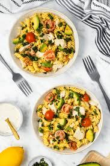

LATEST RECIPES
CHICKEN AVOCADO PASTA
Blue sky's new menu
Blue sky Eating menyajikan menu yang populer dan tampak menggugah selera. kelezatan tersembunyi seringkali ada pada maknan sederhana.
SAUSAGE AND VEG TRAY BAKE
Easy sausage
Easy sausage and veg tray bake ini adalah santapan tengah minggu yang sempurna.
About Me

jangan lupa untuk mengunjungi tempat kami
Popular Post
Follow Me
Ig:rinrnty06